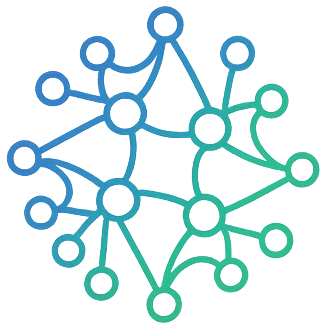

Un portal para el aprendizaje en los datos, la inteligencia artificial, la tecnología y la gestión empresarial.
Recursos & Packs Profesionales
Modelos cuantitativos, plantillas de decisión y guías metodológicas diseñadas para el ámbito profesional, comités directivos y control corporativo.
Herramientas para defender decisiones estratégicas ante juntas y comités: modelos en Excel protegidos con fórmulas matriciales, diapositivas PowerPoint 16:9 con Pirámide de Minto y guías metodológicas en PDF.
El Blog en 4 Temáticas
Explora los 98 artículos clasificados por ámbito de conocimiento. Selecciona una categoría para explorar sus lecturas recomendadas:
Aplicaciones & Experimentos
Herramientas interactivas en vivo desarrolladas para explorar tecnologías web, inteligencia artificial y resolver problemas cotidianos.
Sistema operativo integral personal y profesional con Kanban, biblioteca, cine y dashboard 360°.
Dashboard ejecutivo impulsado por agentes IA para mitigar el riesgo en la cadena de suministro industrial.
Versión arcade del clásico Snake con estética cyberpunk y ranking global en tiempo real con Supabase.
Consulta meteorológica en tiempo real enriquecida con modelos predictivos de Machine Learning.
Navaja suiza rápida y ligera para transformar unidades de medida, magnitud e ingeniería.
Aplicación interactiva para memorizar conceptos técnicos usando repetición espaciada y gamificación.